Análise de agrupamento
Até este momento estudamos métodos para representar os dados em um espaço de menor dimensão.
Agora surge uma nova pergunta:
Será que existem grupos naturais nos dados?
A análise de agrupamento (Cluster Analysis) procura responder essa questão, identificando automaticamente conjuntos de observações semelhantes entre si.
Características importantes:
Importante
A análise de agrupamento é um problema clássico de aprendizagem não supervisionada.
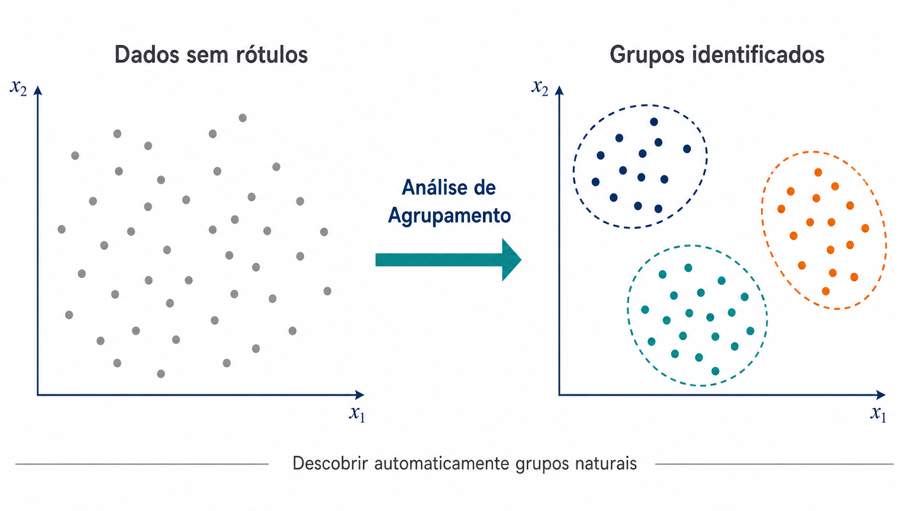
| Aprendizagem Supervisionada | Aprendizagem Não Supervisionada |
|---|---|
| Classes conhecidas | Classes desconhecidas |
| Variável resposta disponível | Não existe variável resposta |
| Classificação | Agrupamento |
| Regressão | Descoberta de padrões |
Nota
Enquanto os métodos supervisionados aprendem a partir de exemplos rotulados, os métodos de agrupamento procuram identificar padrões presentes apenas nas variáveis explicativas.
Intuitivamente, um agrupamento deve apresentar duas propriedades:
Alta similaridade interna: observações pertencentes ao mesmo grupo devem ser semelhantes entre si.
Baixa similaridade externa: observações pertencentes a grupos diferentes devem ser suficientemente distintas.
Esses dois objetivos geralmente são conflitantes e dependem da forma como a similaridade é definida.
Importante
Não existe uma definição única de “grupo”.
Cada algoritmo utiliza um conceito diferente de proximidade e similaridade.
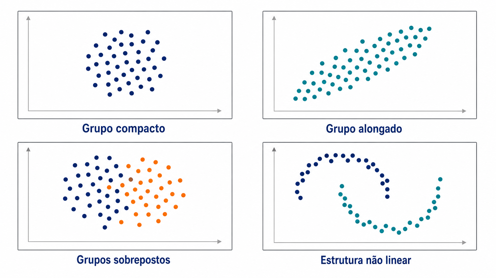
Diferentes algoritmos são adequados para diferentes estruturas dos dados.
| Estrutura dos dados | Algoritmo mais indicado |
|---|---|
| Grupos aproximadamente esféricos | K-means |
| Estruturas hierárquicas | Agrupamento Hierárquico |
| Estruturas não lineares | Agrupamento Espectral |
Nota
A escolha do algoritmo depende da geometria dos dados e da definição de similaridade adotada.
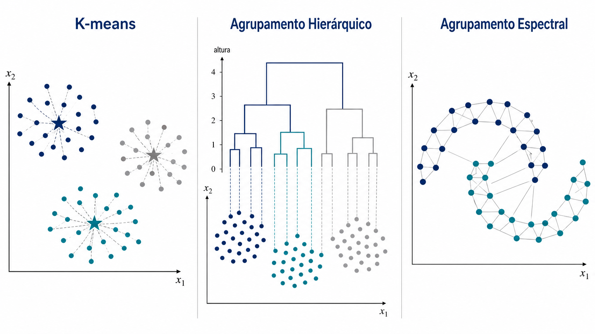
A ideia central da análise de agrupamento é reunir observações semelhantes.
Mas surge uma questão fundamental:
Como medir o quão semelhantes são duas observações?
Para isso, utilizamos medidas de distância ou medidas de similaridade.
Quanto menor a distância entre duas observações,
mais semelhantes elas tendem a ser.
Importante
A escolha da medida de distância influencia diretamente os grupos encontrados.
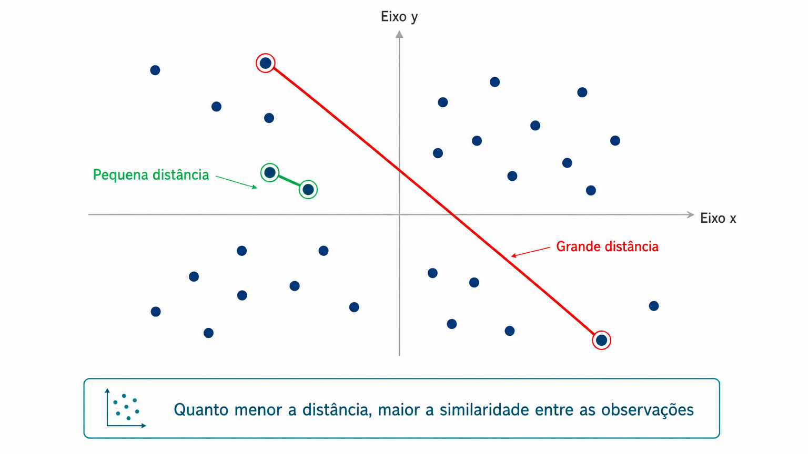
A distância Euclidiana corresponde ao comprimento do segmento de reta que liga duas observações.
Para duas observações \(\mathbf{x}_i=(x_{i1},\ldots,x_{ip})\) e \(\mathbf{x}_j=(x_{j1},\ldots,x_{jp})\), a distância Euclidiana é dada por
\[ \boxed{ d(\mathbf{x}_i,\mathbf{x}_j)= \sqrt{ \sum_{k=1}^{p} (x_{ik}-x_{jk})^2 } } \]
Observação
O algoritmo K-means utiliza, por padrão, a distância Euclidiana.
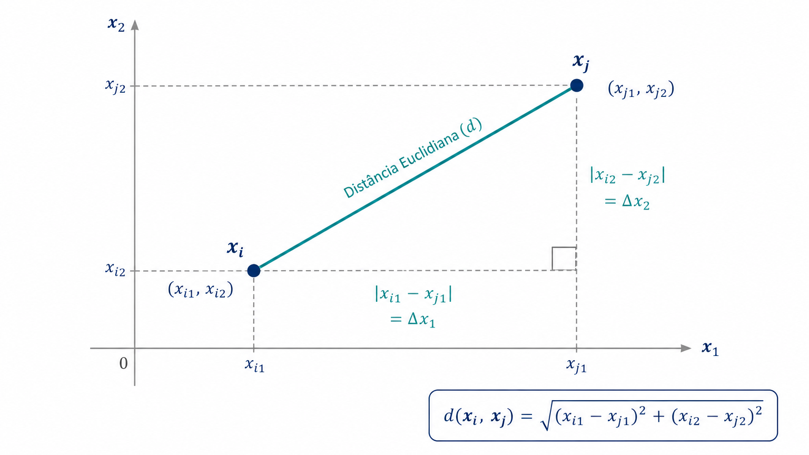
Dependendo do problema, outras medidas podem ser mais adequadas.
| Medida | Aplicações |
|---|---|
| Euclidiana | Dados contínuos |
| Manhattan | Dados urbanos, trajetórias em grade |
| Mahalanobis | Variáveis correlacionadas |
| Cosseno | Textos, documentos e embeddings |
| Jaccard | Dados binários e conjuntos |
Nota
Não existe uma medida universalmente melhor.
A escolha depende da natureza dos dados e do objetivo da análise.
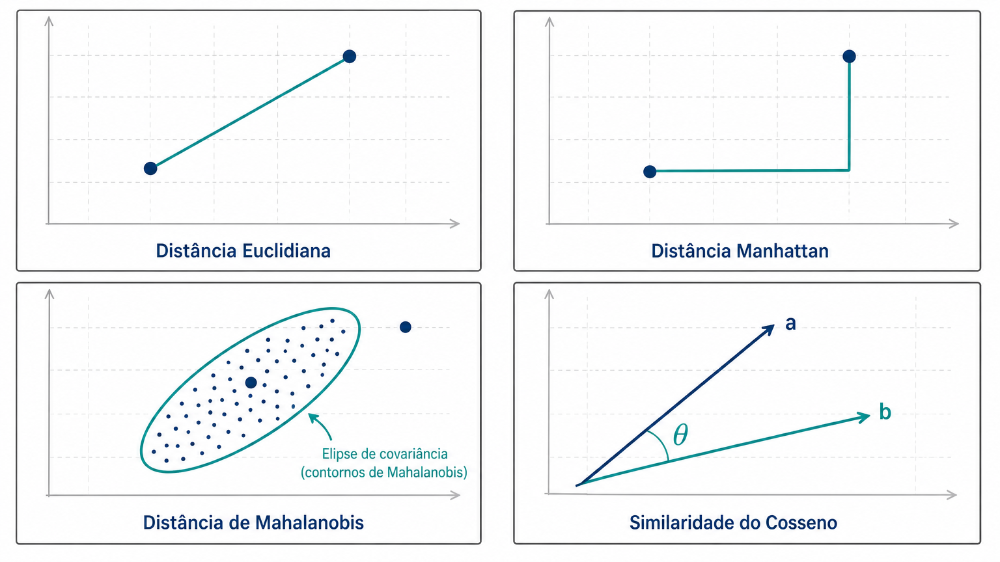
Considere duas variáveis:
Ao calcular a distância Euclidiana, a variável com maior escala tende a dominar o cálculo.
Por esse motivo, é comum padronizar os dados antes da análise de agrupamento.
\[ \boxed{ z= \frac{x-\mu}{\sigma} } \]
A padronização garante que todas as variáveis contribuam de forma equilibrada para o cálculo das distâncias.
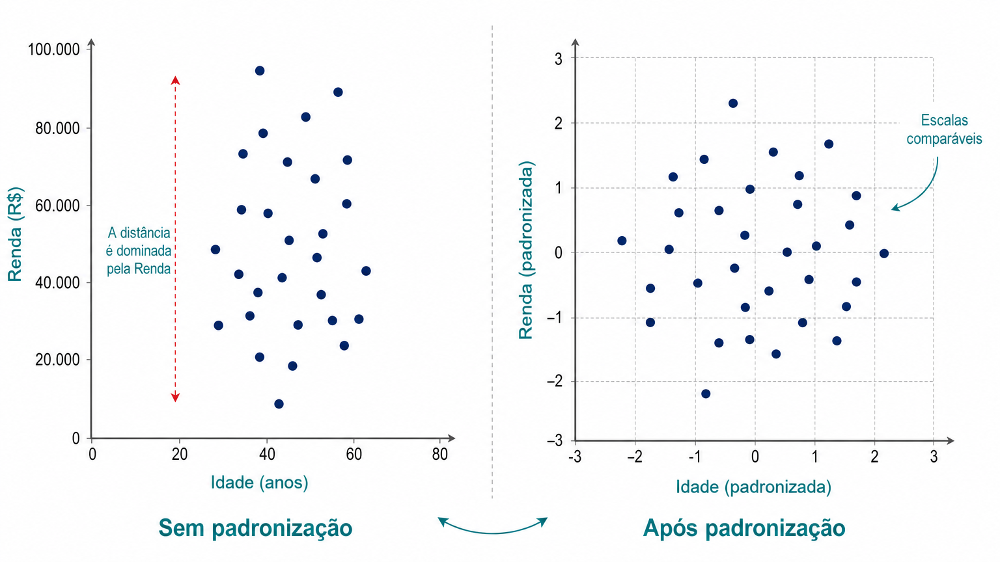
O nome do algoritmo possui dois significados importantes.
Representa o número de grupos que desejamos encontrar.
Exemplos:
Esse valor deve ser definido antes da execução do algoritmo.
Cada grupo é representado por um centróide, calculado como a média das observações pertencentes ao grupo.
\[ \boxed{ \mu_k = \frac1{n_k} \sum_{i\in C_k} x_i } \]
Nota
Cada centróide representa o “centro” de um grupo.
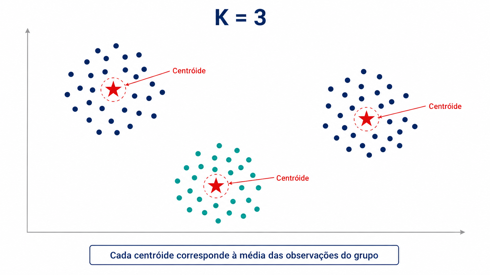
O algoritmo K-médias procura encontrar
O processo ocorre de forma iterativa:
Inicializar os centróides.
Atribuir cada observação ao centróide mais próximo.
Recalcular os centróides.
Repetir até a convergência.
O algoritmo alterna continuamente entre atribuir observações e atualizar centróides.
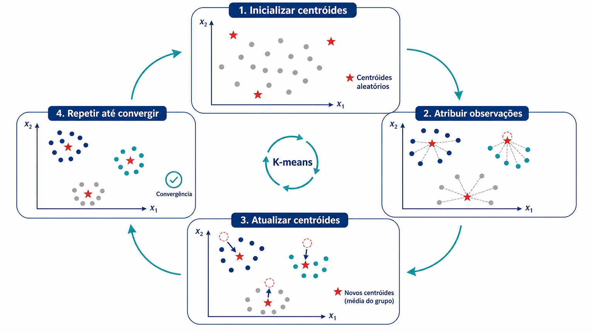
Mantendo os centróides fixos, cada observação é atribuída ao centróide mais próximo.
Matematicamente,
\[ \boxed{ C_i = \arg\min_k d(x_i,\mu_k) } \]
onde
Nota
Cada observação pertence ao grupo cujo centróide apresenta a menor distância Euclidiana.
Após definir os grupos, cada centróide é recalculado utilizando a média das observações pertencentes ao grupo.
\[ \boxed{ \mu_k = \frac1{n_k} \sum_{i\in C_k} x_i } \]
Assim, os centróides deslocam-se para posições mais representativas dos grupos.
Observação
Os novos centróides geralmente ocupam posições diferentes das posições iniciais.
Escolher o número de grupos \(K\).
Inicializar os centróides.
Atribuir cada observação ao centróide mais próximo.
Atualizar os centróides.
Repetir os passos 3 e 4 até que não ocorram mudanças significativas.
Importante
O algoritmo converge porque, a cada iteração, a variabilidade interna dos grupos nunca aumenta.
O objetivo do K-médias é formar grupos
Em outras palavras, o algoritmo procura tornar cada grupo o mais compacto possível.
Quanto mais próximas as observações estiverem do centróide, melhor será o agrupamento.
A qualidade de um agrupamento é medida pela proximidade das observações em relação ao centróide do seu grupo.
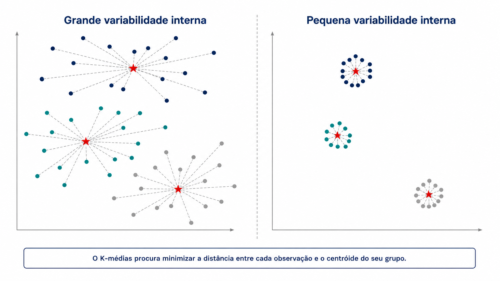
Considere um grupo
\[ C_k \]
Cada observação possui uma distância até o centróide
\[ \mu_k \]
Essas distâncias medem o espalhamento interno do grupo.
Quanto menores forem essas distâncias, mais compacto será o agrupamento.
Para um grupo, a variabilidade é medida por
\[ \boxed{ W_k = \sum_{x_i\in C_k} \|x_i-\mu_k\|^2 } \]
A variabilidade total é
\[ \boxed{ WCSS = \sum_{k=1}^{K} \sum_{x_i\in C_k} \|x_i-\mu_k\|^2 } \]
onde
Nota
WCSS significa Within-Cluster Sum of Squares.
O algoritmo procura resolver
\[ \boxed{ \min_{C_1,\ldots,C_K} \; \sum_{k=1}^{K} \sum_{x_i\in C_k} \|x_i-\mu_k\|^2 } \]
Observe que o algoritmo procura simultaneamente
definir os grupos;
calcular os centróides.
Esses dois problemas dependem um do outro.
Por isso, o K-médias utiliza um procedimento iterativo.
Existem três razões principais.
Evitar cancelamento entre distâncias positivas e negativas;
Penalizar mais fortemente observações muito distantes do centróide;
Produzir uma função objetivo diferenciável e conveniente para otimização.
Observação
O uso das distâncias quadráticas faz com que o centróide ótimo seja exatamente a média das observações do grupo.
Considere um único grupo contendo \(n_k\) observações
\[ x_1,x_2,\ldots,x_{n_k}. \]
Mantendo esse grupo fixo, o problema consiste em minimizar
\[ \boxed{ f(\mu) = \sum_{i=1}^{n_k} \|x_i-\mu\|^2 } \]
em relação ao centróide \(\mu\).
Ou seja, queremos encontrar o ponto que torna mínima a soma das distâncias quadráticas até todas as observações.
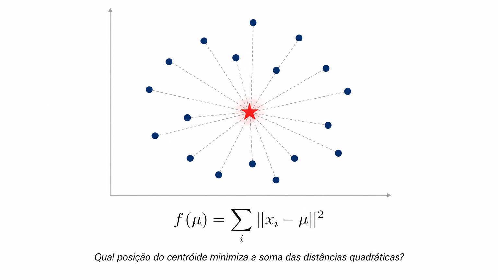
Expandindo a função objetivo,
\[ f(\mu) = \sum_{i=1}^{n_k} (x_i-\mu)^2 \]
Derivando em relação ao centróide,
\[ \frac{\partial f}{\partial\mu} = -2 \sum_{i=1}^{n_k} (x_i-\mu) \]
No ponto de mínimo,
\[ \frac{\partial f}{\partial\mu}=0 \]
Logo,
\[ \sum_{i=1}^{n_k}(x_i-\mu)=0, \]
o que implica
\[ \boxed{ \mu = \frac1{n_k} \sum_{i=1}^{n_k} x_i } \]
Importante
O melhor centróide, no sentido de minimizar a soma dos quadrados das distâncias, é exatamente a média das observações do grupo.
Em cada iteração, o algoritmo executa duas operações:
Atribuição das observações
Cada observação é enviada ao centróide mais próximo.
Atualização dos centróides
Cada centróide é recalculado como a média das observações do grupo.
Em ambas as etapas, a função objetivo
\[ WCSS= \sum_{k=1}^{K} \sum_{x_i\in C_k} \|x_i-\mu_k\|^2 \]
nunca aumenta.
Importante
A cada iteração, o valor de WCSS diminui ou permanece constante.
Infelizmente, não.
O problema de otimização do K-médias é não convexo.
Isso significa que diferentes inicializações podem levar a diferentes soluções.
\[ \boxed{ \text{K-means} \Longrightarrow \text{mínimo local} } \]
Cuidado
O resultado depende da escolha inicial dos centróides.
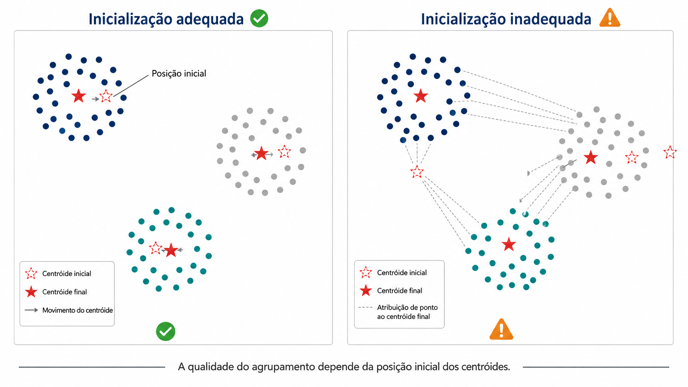
Na prática, duas estratégias são amplamente utilizadas.
Executar o algoritmo diversas vezes, mantendo a solução com menor WCSS.
Selecionar centróides iniciais bem distribuídos, reduzindo a probabilidade de convergência para soluções ruins.
A maioria das implementações modernas utiliza K-means++ como padrão.
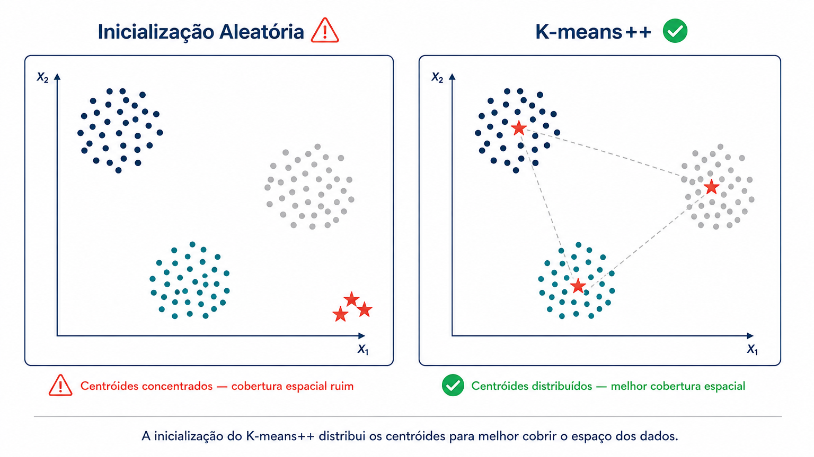
O algoritmo encerra quando ocorre uma das seguintes situações:
os centróides deixam de se mover;
nenhuma observação muda de grupo;
a redução em WCSS torna-se desprezível;
é atingido o número máximo de iterações.
Em geral, a convergência ocorre após poucas iterações.
O K-médias sempre converge em um número finito de passos, embora não necessariamente para o mínimo global.
O algoritmo K-médias exige que o número de grupos seja definido antes da execução.
Na prática, raramente esse valor é conhecido antecipadamente.
Por esse motivo, diversos critérios foram desenvolvidos para auxiliar na escolha de um valor adequado para \(K\).
Os mais utilizados são:
A escolha de \(K\) influencia diretamente a qualidade do agrupamento obtido.
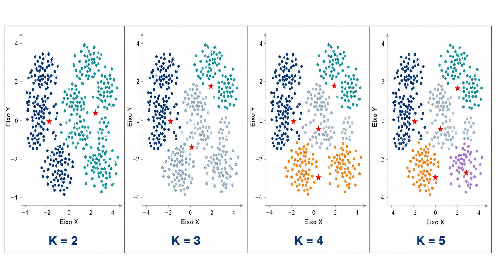
À medida que aumentamos o número de grupos, a variabilidade interna dos grupos diminui.
Essa redução pode ser medida por
\[ WCSS = \sum_{k=1}^{K} \sum_{x_i\in C_k} \|x_i-\mu_k\|^2. \]
O Método do Cotovelo consiste em representar o valor de WCSS em função de \(K.\)
O ponto onde a redução deixa de ser significativa sugere um valor adequado para o número de grupos.
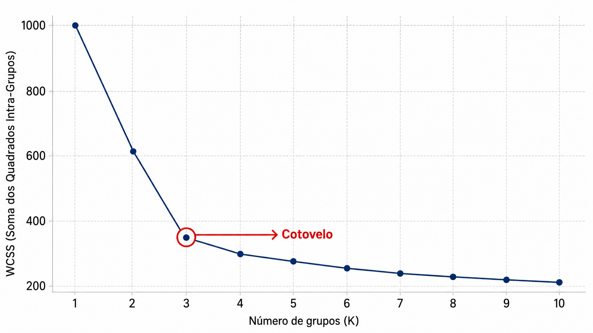
Inicialmente, cada novo grupo reduz significativamente a variabilidade interna.
Entretanto, a partir de determinado valor, o ganho obtido torna-se cada vez menor.
O cotovelo representa um equilíbrio entre
Observação
Nem sempre o cotovelo é claramente definido.
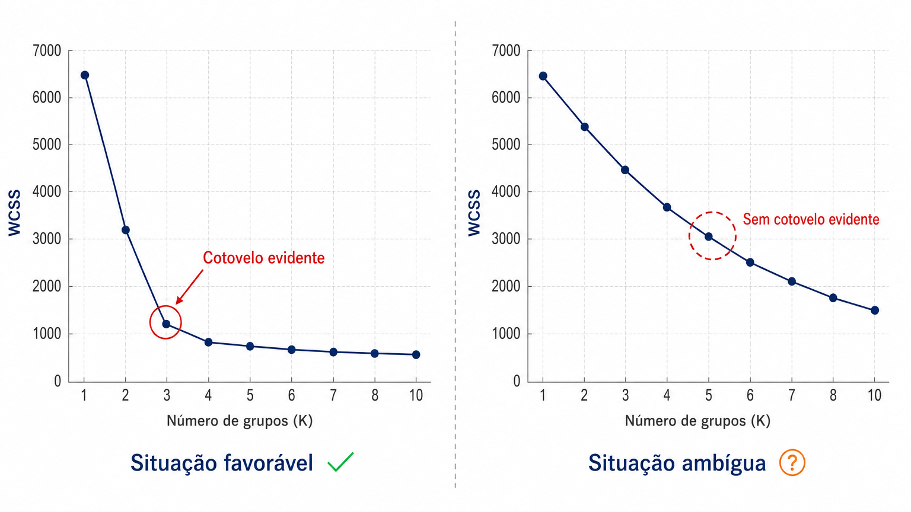
O coeficiente de Silhouette avalia simultaneamente
Para cada observação, define-se \(a(i)\) como a distância média às observações do próprio grupo, e \(b(i)\) como a menor distância média aos demais grupos.
O índice é definido por
\[ \boxed{ s(i)= \frac{b(i)-a(i)} {\max\{a(i),b(i)\}} } \]
onde
\[ -1\le s(i)\le1 \]
Valores próximos de \(1\) indicam observações bem agrupadas. Valores próximos de \(0\) indicam observações localizadas na fronteira entre grupos.
Valores negativos indicam provável classificação incorreta.
| Valor de \(s(i)\) | Interpretação |
|---|---|
| próximo de 1 | excelente agrupamento |
| próximo de 0 | fronteira entre grupos |
| menor que 0 | provável grupo incorreto |
Observação
Na prática, utiliza-se a média dos coeficientes de Silhouette para comparar diferentes valores de \(K.\)
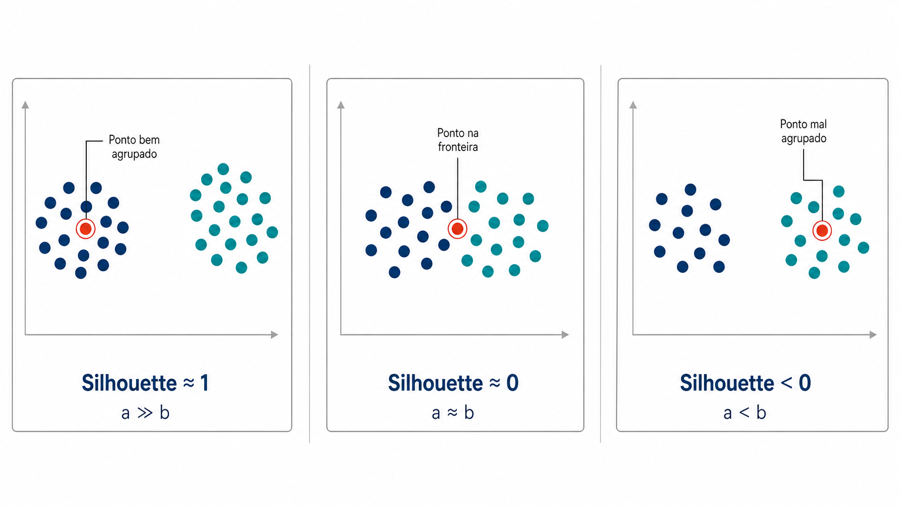
| Critério | Ideia principal | Melhor valor |
|---|---|---|
| Método do Cotovelo | redução de WCSS | ponto de inflexão |
| Silhouette | separação entre grupos | maior valor médio |
| Gap Statistic | comparação com dados aleatórios | maior Gap |
Cada critério fornece uma perspectiva diferente sobre a estrutura dos dados.
Por esse motivo, é recomendável utilizar mais de um método na escolha de \(K.\)
Observação
Em aplicações práticas, o Método do Cotovelo e o coeficiente de Silhouette são frequentemente utilizados em conjunto.
A escolha do número de grupos influencia diretamente a interpretação dos dados.
Uma mesma base pode produzir agrupamentos bastante diferentes dependendo do valor adotado para \(K.\)
| Valor de \(K\) | Consequência |
|---|---|
| Pequeno | Grupos distintos são fundidos. |
| Adequado | A estrutura natural é bem representada. |
| Grande | Um mesmo grupo é dividido em vários subgrupos. |
O objetivo não é obter o maior número possível de grupos, mas encontrar uma representação simples e consistente da estrutura dos dados.
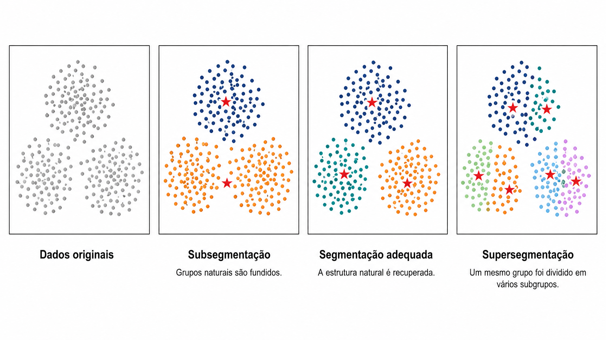
O melhor valor de K depende do objetivo da análise e da estrutura dos dados. Os critérios estatísticos auxiliam essa escolha, mas a interpretação do problema continua sendo fundamental.
K-means clustering with 3 clusters of sizes 38, 50, 62
Cluster means:
Sepal.Length Sepal.Width Petal.Length Petal.Width
1 6.850000 3.073684 5.742105 2.071053
2 5.006000 3.428000 1.462000 0.246000
3 5.901613 2.748387 4.393548 1.433871
Clustering vector:
[1] 2 2 2 2 2 2 2 2 2 2 2 2 2 2 2 2 2 2 2 2 2 2 2 2 2 2 2 2 2 2 2 2 2 2 2 2 2
[38] 2 2 2 2 2 2 2 2 2 2 2 2 2 3 3 1 3 3 3 3 3 3 3 3 3 3 3 3 3 3 3 3 3 3 3 3 3
[75] 3 3 3 1 3 3 3 3 3 3 3 3 3 3 3 3 3 3 3 3 3 3 3 3 3 3 1 3 1 1 1 1 3 1 1 1 1
[112] 1 1 3 3 1 1 1 1 3 1 3 1 3 1 1 3 3 1 1 1 1 1 3 1 1 1 1 3 1 1 1 3 1 1 1 3 1
[149] 1 3
Within cluster sum of squares by cluster:
[1] 23.87947 15.15100 39.82097
(between_SS / total_SS = 88.4 %)
Available components:
[1] "cluster" "centers" "totss" "withinss" "tot.withinss"
[6] "betweenss" "size" "iter" "ifault" kmeans()O resultado da função é um objeto contendo diversas informações. Principais componentes:
| Elemento | Significado |
|---|---|
| cluster | grupo atribuído a cada observação |
| centers | coordenadas dos centróides |
| totss | variabilidade total |
| withinss | variabilidade de cada grupo |
| tot.withinss | WCSS |
| betweenss | variabilidade entre grupos |
| size | número de observações em cada grupo |
Esses elementos serão utilizados para interpretar a qualidade do agrupamento.
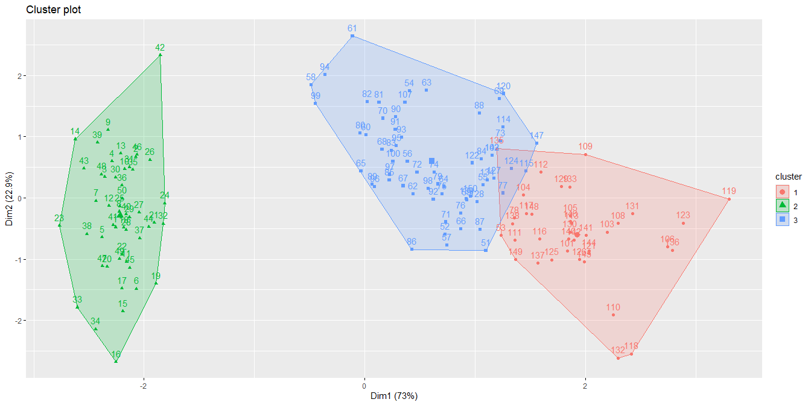
Embora seja um dos algoritmos mais utilizados, o K-médias apresenta algumas limitações importantes.
exige a definição prévia do número de grupos;
assume grupos aproximadamente esféricos;
é sensível à inicialização dos centróides;
apresenta dificuldade para identificar estruturas hierárquicas.
Essas limitações motivaram o desenvolvimento de outros métodos de agrupamento.
Importante
Nem todos os conjuntos de dados possuem grupos aproximadamente circulares.
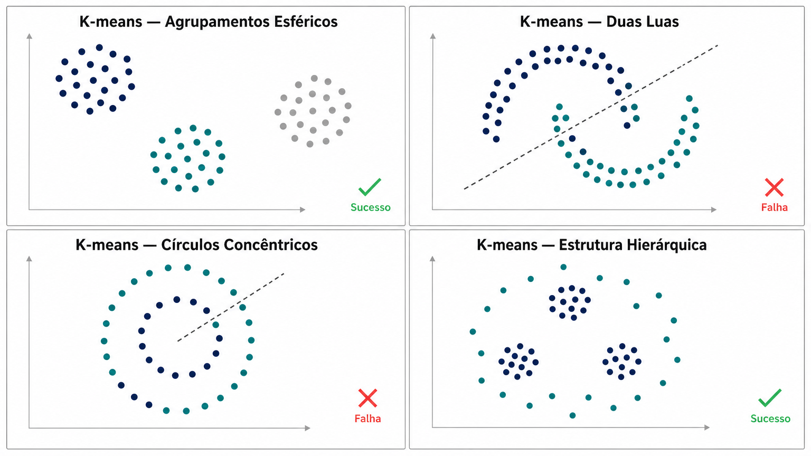
O agrupamento hierárquico constrói sucessivamente grupos maiores a partir das observações individuais.
Em vez de produzir apenas uma partição dos dados, o algoritmo constrói uma estrutura em árvore, denominada dendrograma.
Essa representação permite visualizar agrupamentos em diferentes níveis de detalhamento.
O número de grupos pode ser definido posteriormente por meio do corte do dendrograma.
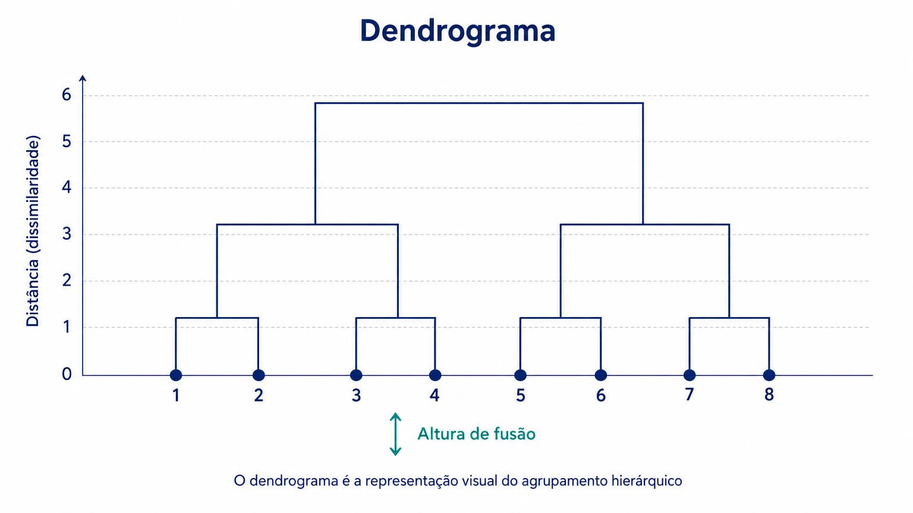
Inicialmente, cada observação constitui um grupo independente.
A cada etapa, os dois grupos mais próximos são unidos.
Esse processo continua até que todas as observações pertençam a um único grupo.
O agrupamento hierárquico é um processo sucessivo de fusões entre grupos.
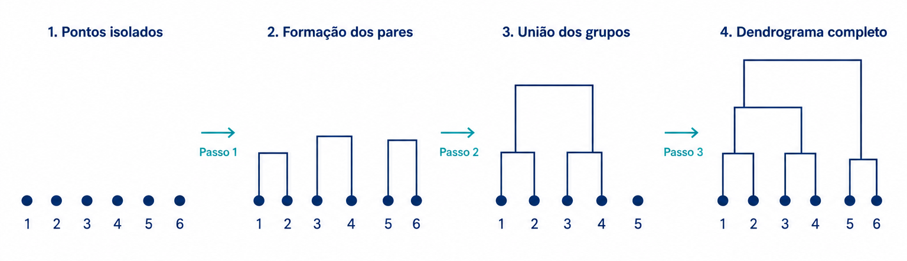
O procedimento pode ser resumido em quatro etapas.
Inicializar cada observação como um grupo.
Calcular as distâncias entre todos os grupos.
Unir os dois grupos mais próximos.
Atualizar as distâncias e repetir o processo.
O algoritmo termina quando todas as observações pertencem ao mesmo grupo.
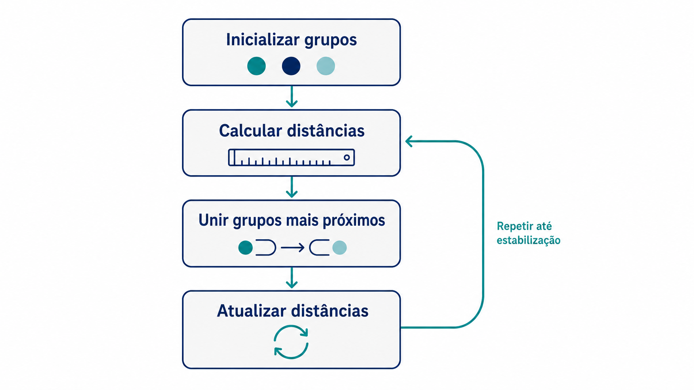
O dendrograma registra todas as fusões realizadas pelo algoritmo ao longo do processo de agrupamento.
Cada união representa a combinação de dois grupos.
A altura em que ocorre cada fusão corresponde à distância entre esses grupos.
Importante
O dendrograma é um registro da sequência de fusões realizada pelo algoritmo.
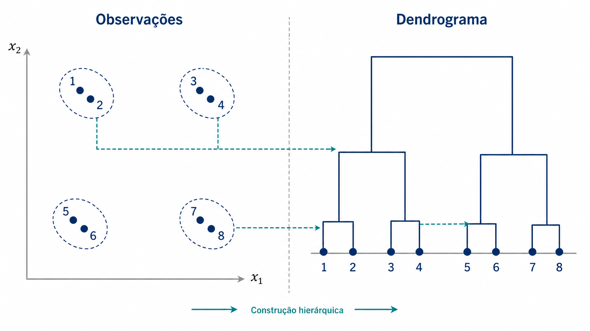
Cada ramo do dendrograma representa um agrupamento formado durante a execução do algoritmo.
Quanto menor a altura da união, mais semelhantes eram os grupos que foram combinados.
Uniões realizadas em alturas maiores indicam grupos menos semelhantes.
A altura do ramo representa a distância utilizada para unir dois grupos.
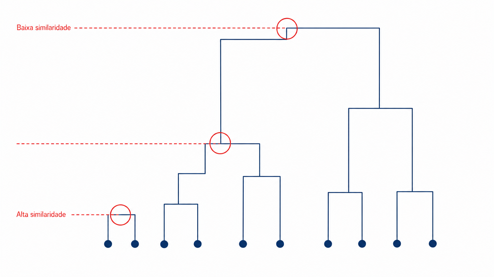
O agrupamento final é obtido por meio de um corte horizontal no dendrograma.
Cada ramo interceptado pelo corte corresponde a um grupo distinto.
Assim, diferentes alturas produzem diferentes números de grupos.
Importante
O número de grupos não precisa ser definido antes da execução do algoritmo.
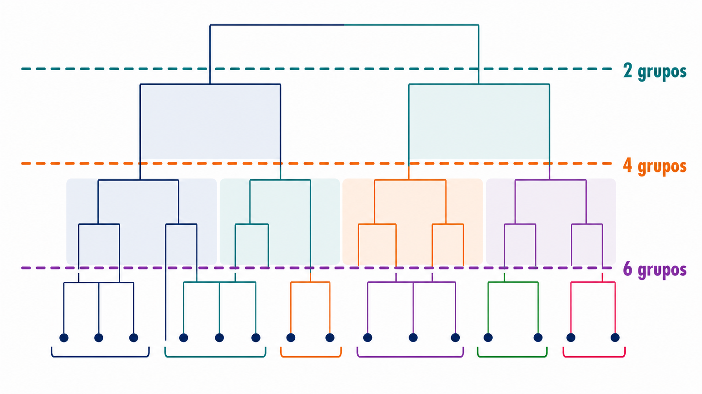
À medida que o corte é realizado em alturas menores, o número de grupos aumenta.
Por outro lado, cortes realizados em alturas maiores produzem agrupamentos mais amplos.
| Altura do corte | Número de grupos |
|---|---|
| Alta | Poucos grupos |
| Intermediária | Número moderado de grupos |
| Baixa | Muitos grupos |
O dendrograma permite analisar simultaneamente diversas soluções de agrupamento.
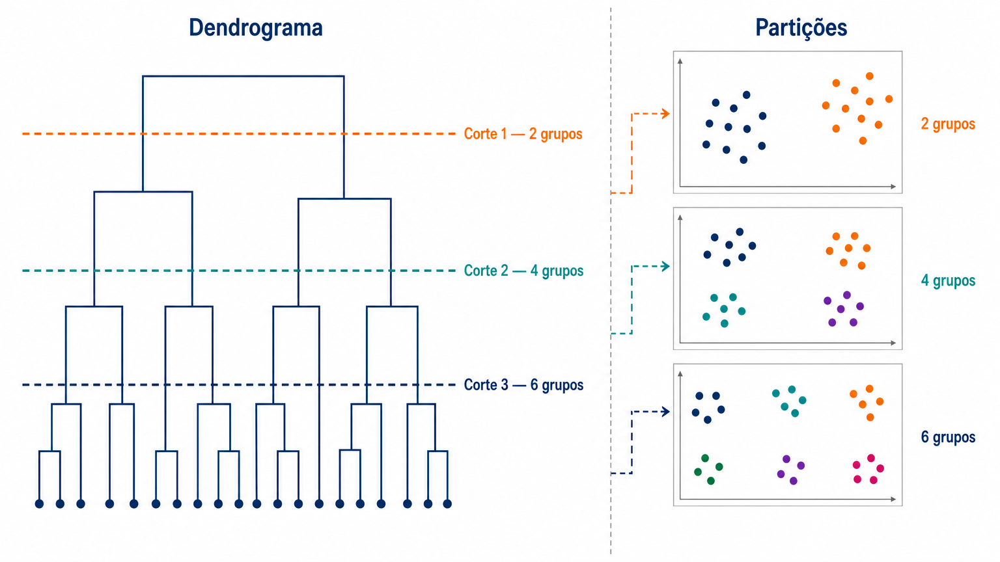
Em muitos problemas, o melhor ponto de corte coincide com um grande salto nas distâncias entre fusões consecutivas.
Esses saltos indicam que grupos relativamente distintos passaram a ser unidos.
Assim, é recomendável realizar o corte imediatamente antes dessas grandes fusões.
Dica
Grandes espaços verticais no dendrograma costumam indicar boas escolhas para o corte.
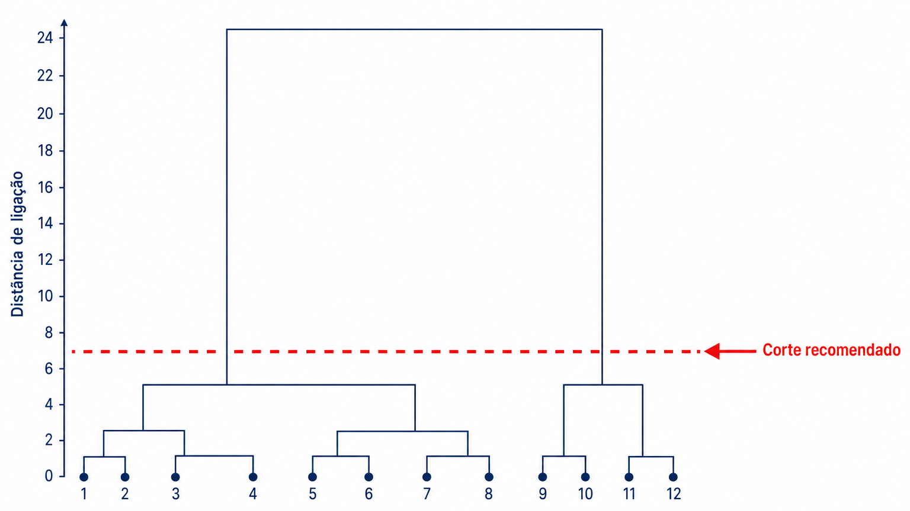
Importante
O agrupamento hierárquico oferece maior flexibilidade de interpretação, porém possui maior custo computacional que o K-médias.
Após as primeiras fusões, cada grupo passa a conter várias observações.
Nesse momento surge uma nova questão:
Como calcular a distância entre dois grupos?
Existem diferentes maneiras de definir essa distância.
Cada definição conduz a um método de ligação (linkage) diferente.
Importante
A definição da distância entre grupos influencia diretamente a estrutura do dendrograma.
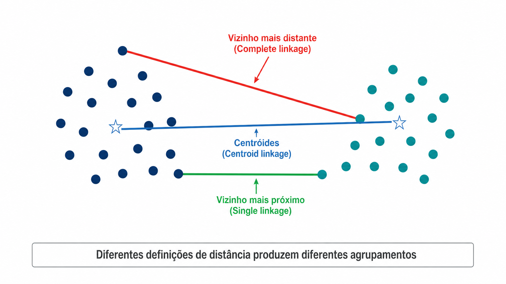
Na ligação simples, a distância entre dois grupos é definida como a menor distância entre quaisquer duas observações pertencentes a grupos diferentes.
\[ \boxed{ d(A,B)= \min_{x_i\in A,\;x_j\in B} d(x_i,x_j) } \]
Características:
Nota
A união ocorre pelos dois pontos mais próximos.
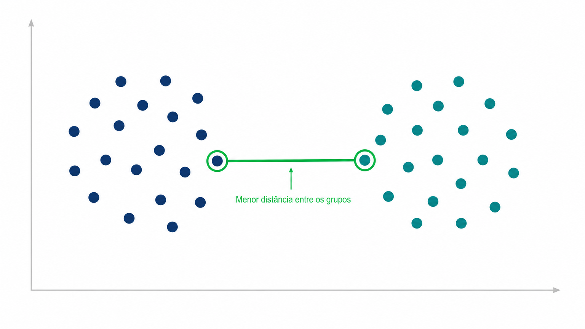
Na ligação completa, a distância entre dois grupos corresponde à maior distância entre quaisquer duas observações pertencentes aos grupos.
\[ \boxed{ d(A,B)= \max_{x_i\in A,\;x_j\in B} d(x_i,x_j) } \]
Características:
Nota
A união considera o par de observações mais distante.
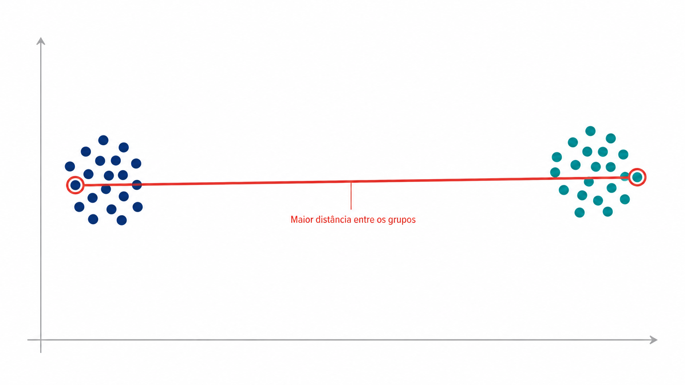
Na ligação média, a distância entre dois grupos é calculada pela média de todas as distâncias entre pares de observações pertencentes aos dois grupos.
\[ \boxed{ d(A,B)= \frac1{|A||B|} \sum_{x_i\in A} \sum_{x_j\in B} d(x_i,x_j) } \]
Características:
Nota
Representa um compromisso entre os métodos de ligação simples e completa.
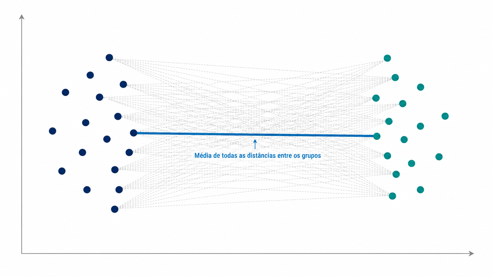
O método de Ward adota uma estratégia diferente.
Em vez de utilizar uma distância entre observações, ele seleciona a fusão que provoca o menor aumento da variabilidade interna dos grupos.
Equivalentemente, procura minimizar o aumento da soma dos quadrados intra-grupos (WCSS).
\[ \boxed{ \Delta WCSS = WCSS_{após} - WCSS_{antes} } \]
Importante
O método de Ward aproxima a ideia utilizada pelo algoritmo K-médias.
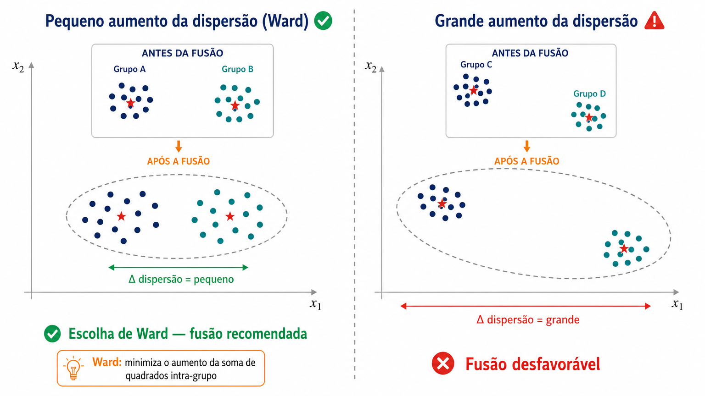
A mesma base de dados pode produzir dendrogramas diferentes dependendo do método de ligação utilizado.
Essa diferença altera diretamente os agrupamentos obtidos após o corte da árvore.
Observação
O método de ligação influencia tanto a forma do dendrograma quanto os grupos finais.
library(ggplot2)
library(dplyr)
library(patchwork)
library(ggdendro)
set.seed(335)
# --------------------------------------------------
# 1. Construir uma única base com formas arbitrárias
# --------------------------------------------------
# Meia-lua superior
n_lua <- 75
theta1 <- runif(n_lua, 0, pi)
lua_superior <- data.frame(
x = 2.8 * cos(theta1) + rnorm(n_lua, 0, 0.12),
y = 1.6 * sin(theta1) + rnorm(n_lua, 0, 0.12)
)
# Meia-lua inferior deslocada
theta2 <- runif(n_lua, 0, pi)
lua_inferior <- data.frame(
x = 2.8 * cos(theta2) + 1.2 + rnorm(n_lua, 0, 0.12),
y = -1.6 * sin(theta2) - 0.45 + rnorm(n_lua, 0, 0.12)
)
# Grupo compacto à direita
n_compacto <- 45
grupo_compacto <- data.frame(
x = rnorm(n_compacto, mean = 5.2, sd = 0.38),
y = rnorm(n_compacto, mean = 1.5, sd = 0.38)
)
# Pequena ponte de pontos
ponte <- data.frame(
x = seq(3.1, 4.5, length.out = 12) + rnorm(12, 0, 0.05),
y = seq(0.25, 1.15, length.out = 12) + rnorm(12, 0, 0.05)
)
dados <- bind_rows(
lua_superior,
lua_inferior,
grupo_compacto,
ponte
) |>
mutate(id = row_number())
# Padronização
X <- scale(dados[, c("x", "y")])
# Mesma matriz de distâncias para todos os métodos
D <- dist(X, method = "euclidean")
# --------------------------------------------------
# 2. Ajustar os métodos de ligação
# --------------------------------------------------
metodos <- c(
"single",
"complete",
"average",
"ward.D2"
)
nomes <- c(
"Single",
"Complete",
"Average",
"Ward"
)
ajustes <- lapply(
metodos,
function(metodo) {
hclust(D, method = metodo)
}
)
names(ajustes) <- nomes
# Número de grupos usado na comparação
K <- 3
# --------------------------------------------------
# 3. Função para produzir a partição
# --------------------------------------------------
grafico_particao <- function(ajuste, titulo) {
grupos <- cutree(
ajuste,
k = K
)
dados_plot <- dados |>
mutate(
grupo = factor(grupos)
)
ggplot(
dados_plot,
aes(
x = x,
y = y,
color = grupo
)
) +
geom_point(
size = 2.1,
alpha = 0.85
) +
coord_equal(
xlim = range(dados$x),
ylim = range(dados$y)
) +
labs(
title = titulo,
subtitle = paste0("Corte em K = ", K),
x = NULL,
y = NULL,
color = "Grupo"
) +
theme_minimal(base_size = 13) +
theme(
plot.title = element_text(
face = "bold",
hjust = 0.5
),
plot.subtitle = element_text(
hjust = 0.5,
size = 10
),
legend.position = "none",
panel.grid.minor = element_blank(),
axis.text = element_blank(),
axis.ticks = element_blank()
)
}
# --------------------------------------------------
# 4. Função para produzir o dendrograma
# --------------------------------------------------
grafico_dendrograma <- function(ajuste, titulo) {
dendro <- ggdendro::dendro_data(
ajuste,
type = "rectangle"
)
alturas <- sort(
ajuste$height,
decreasing = TRUE
)
altura_corte <- mean(
c(
alturas[K - 1],
alturas[K]
)
)
ggplot(
ggdendro::segment(dendro)
) +
geom_segment(
aes(
x = x,
y = y,
xend = xend,
yend = yend
),
linewidth = 0.35
) +
geom_hline(
yintercept = altura_corte,
linetype = 2,
linewidth = 0.65
) +
labs(
title = titulo,
x = NULL,
y = "Distância"
) +
scale_x_continuous(
breaks = NULL
) +
theme_minimal(base_size = 12) +
theme(
plot.title = element_text(
face = "bold",
hjust = 0.5
),
legend.position = "none",
panel.grid.minor = element_blank(),
panel.grid.major.x = element_blank()
)
}
# --------------------------------------------------
# 5. Gráfico dos dados originais
# --------------------------------------------------
g_original <- ggplot(
dados,
aes(x, y)
) +
geom_point(
color = "gray45",
size = 2.1,
alpha = 0.85
) +
coord_equal() +
labs(
title = "Base original",
subtitle = "Formas arbitrárias e pontos de conexão",
x = NULL,
y = NULL
) +
theme_minimal(base_size = 13) +
theme(
plot.title = element_text(
face = "bold",
hjust = 0.5
),
plot.subtitle = element_text(
hjust = 0.5,
size = 10
),
panel.grid.minor = element_blank(),
axis.text = element_blank(),
axis.ticks = element_blank()
)
# --------------------------------------------------
# 6. Criar todos os painéis
# --------------------------------------------------
g_single_d <- grafico_dendrograma(
ajustes[["Single"]],
"Single"
)
g_complete_d <- grafico_dendrograma(
ajustes[["Complete"]],
"Complete"
)
g_average_d <- grafico_dendrograma(
ajustes[["Average"]],
"Average"
)
g_ward_d <- grafico_dendrograma(
ajustes[["Ward"]],
"Ward"
)
g_single_p <- grafico_particao(
ajustes[["Single"]],
"Single"
)
g_complete_p <- grafico_particao(
ajustes[["Complete"]],
"Complete"
)
g_average_p <- grafico_particao(
ajustes[["Average"]],
"Average"
)
g_ward_p <- grafico_particao(
ajustes[["Ward"]],
"Ward"
)
# --------------------------------------------------
# 7. Comparação final
# --------------------------------------------------
linha_dendrogramas <- (
g_single_d |
g_complete_d |
g_average_d |
g_ward_d
)
linha_particoes <- (
g_single_p |
g_complete_p |
g_average_p |
g_ward_p
)
figura_final <- (
linha_dendrogramas /
linha_particoes
) +
plot_layout(
heights = c(0.9, 1.1)
) +
plot_annotation(
title = "Métodos de ligação aplicados à mesma base",
subtitle = "Mesmos dados, mesma distância Euclidiana e mesmo corte em K = 3",
theme = theme(
plot.title = element_text(
face = "bold",
size = 20,
hjust = 0.5
),
plot.subtitle = element_text(
size = 13,
hjust = 0.5
)
)
)
figura_final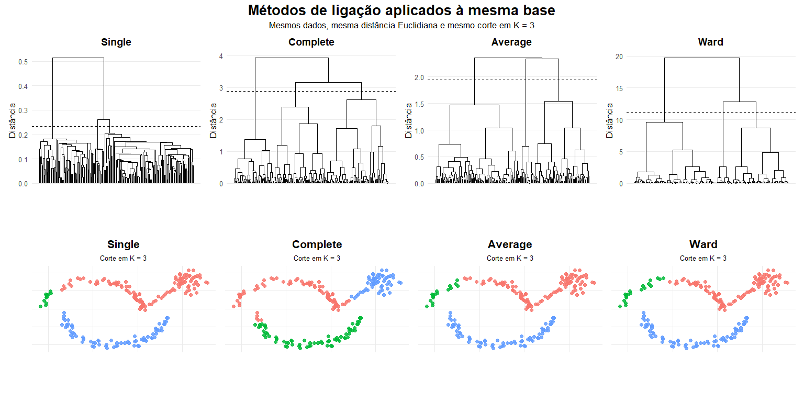
A mesma base de dados foi analisada utilizando quatro critérios diferentes para medir a distância entre grupos.
Observa-se que:
A mesma base de dados foi analisada utilizando quatro critérios diferentes para medir a distância entre grupos.
Observa-se que:
Importante
Como todos os métodos utilizam exatamente a mesma base de dados, as diferenças observadas decorrem exclusivamente da forma como cada método define a distância entre grupos.
| Método | Critério | Característica principal |
|---|---|---|
| Single | Menor distância | Preserva estruturas alongadas |
| Complete | Maior distância | Produz grupos compactos |
| Average | Média das distâncias | Solução intermediária |
| Ward | Menor aumento do WCSS | Grupos homogêneos |
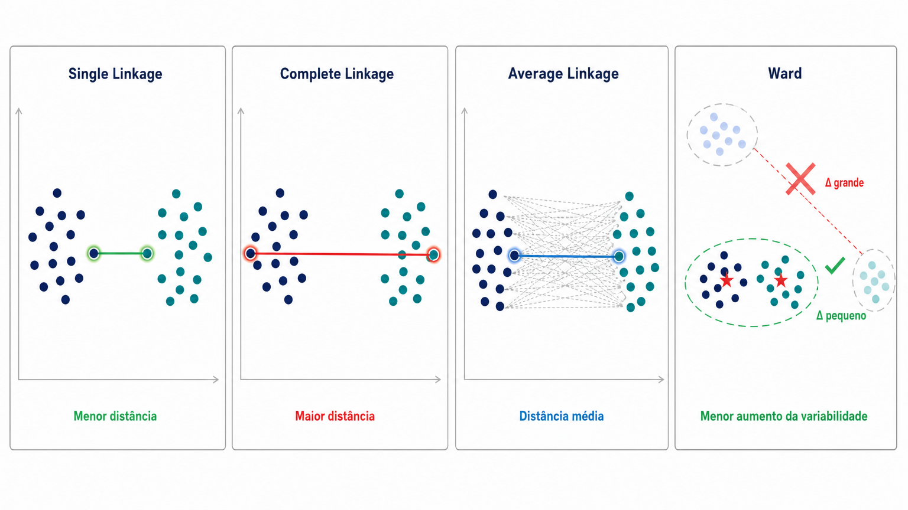
| Método | Quando utilizar | Limitação |
|---|---|---|
| Single | Estruturas alongadas ou conexões naturais | Efeito de encadeamento |
| Complete | Grupos compactos e bem separados | Sensível a extremos |
| Average | Situações gerais | Menor interpretação geométrica |
| Ward | Variáveis quantitativas padronizadas | Não indicado para variáveis categóricas |
Nota
Em aplicações de mineração de dados e estatística multivariada, o método de Ward costuma ser a primeira escolha.
O método de Ward é frequentemente considerado a alternativa hierárquica mais próxima do K-médias, pois ambos buscam formar grupos compactos por meio da minimização da variabilidade interna.
Alguns conjuntos de dados apresentam estruturas que não podem ser representadas adequadamente por grupos aproximadamente esféricos.
Nesses casos, algoritmos como o K-médias podem produzir agrupamentos inadequados, mesmo quando os grupos são visualmente bem definidos.
O agrupamento espectral foi desenvolvido para lidar com estruturas complexas, explorando as relações de similaridade entre as observações.
Importante
Em vez de agrupar diretamente os pontos, o algoritmo agrupa um grafo de similaridades construído a partir dos dados.
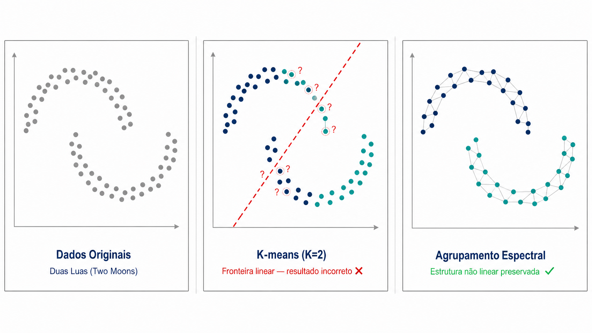
O Agrupamento Espectral transforma o conjunto de dados em um grafo de similaridade.
Nesse grafo:
Assim, o problema deixa de ser “agrupar pontos no espaço” e passa a ser identificar comunidades fortemente conectadas dentro do grafo.
Importante
O Agrupamento Espectral procura separar o grafo em grupos com muitas conexões internas e poucas conexões entre grupos.
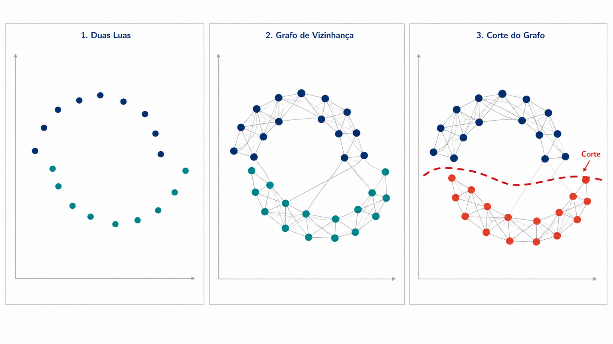
O primeiro passo do Agrupamento Espectral consiste em transformar o conjunto de dados em um grafo ponderado.
Para isso, é necessário definir o grau de similaridade entre cada par de observações.
Quanto maior a similaridade, mais forte será a conexão entre os respectivos nós do grafo.
As conexões podem ser construídas de diferentes maneiras:
Importante
A forma de construir o grafo influencia diretamente a qualidade dos agrupamentos obtidos.
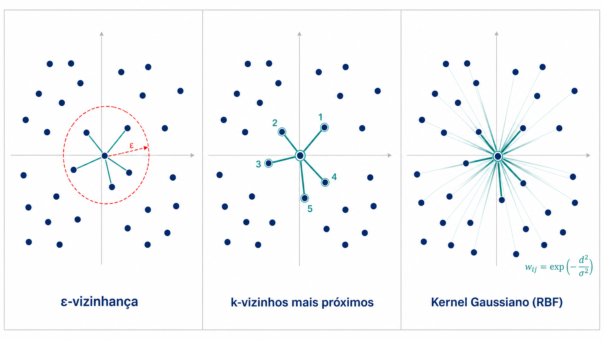
O grafo de similaridade pode ser representado por uma matriz quadrada denominada matriz de adjacência, indicada por
\[ \mathbf{W}=[w_{ij}] \]
Cada elemento \(w_{ij}\) representa a intensidade da conexão entre as observações \(i\) e \(j\).
Quanto maior o valor de \(w_{ij}\), mais semelhantes são as duas observações.
No caso do kernel Gaussiano (RBF),
\[ w_{ij} = \exp\!\left( -\frac{\|x_i-x_j\|^2}{2\sigma^2} \right), \]
onde:
Importante
A matriz \(\mathbf{W}\) descreve completamente o grafo de similaridade utilizado pelo Agrupamento Espectral.
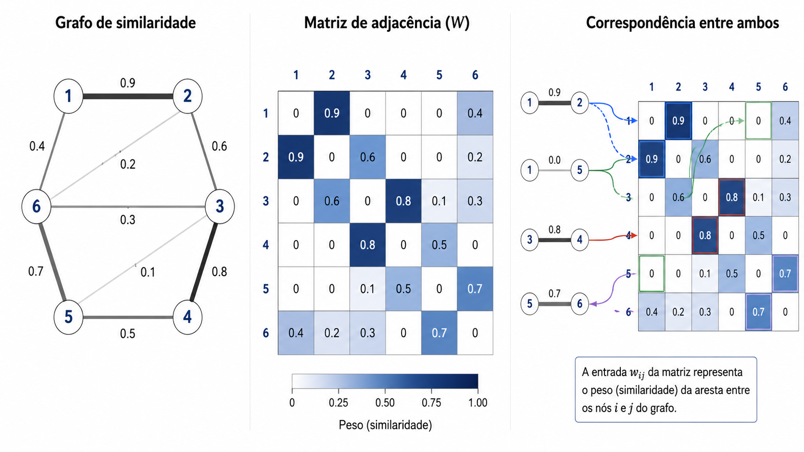
Além da matriz de adjacência, o Agrupamento Espectral utiliza uma segunda matriz denominada matriz grau, representada por \(\mathbf{D}\)
O grau de um nó corresponde à soma dos pesos de todas as conexões incidentes sobre ele.
Matematicamente,
\[ \boxed{ d_i = \sum_{j=1}^{n} w_{ij} } \]
A matriz grau é uma matriz diagonal,
\[ \mathbf{D} = \begin{bmatrix} d_1&0&\cdots&0\\ 0&d_2&\cdots&0\\ \vdots&\vdots&\ddots&\vdots\\ 0&0&\cdots&d_n \end{bmatrix} \]
onde cada elemento da diagonal representa o grau de uma observação.
Nota
A matriz grau resume a intensidade total das conexões de cada nó no grafo.
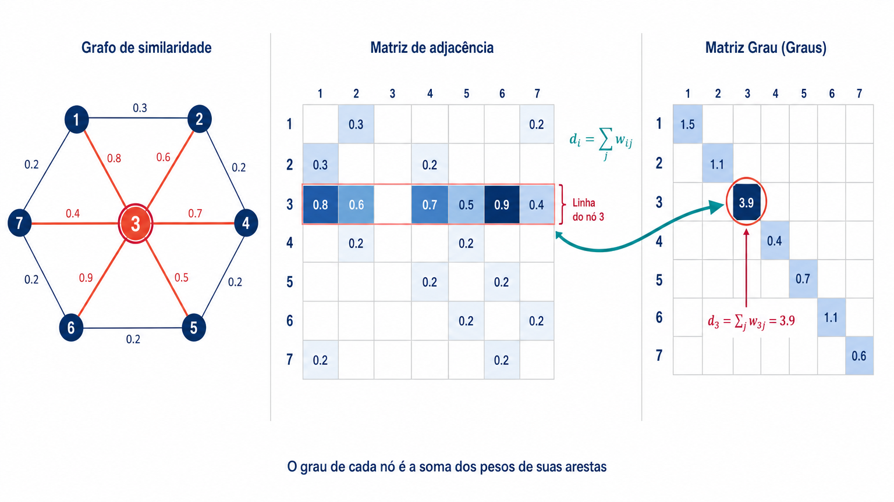
A matriz Laplaciana combina a informação de conectividade da matriz grau com as relações de similaridade da matriz de adjacência.
Ela é definida por
\[ \boxed{ \mathbf{L} = \mathbf{D} - \mathbf{W} } \]
onde
Cada elemento da matriz Laplaciana mede o equilíbrio entre
A matriz Laplaciana descreve a estrutura global do grafo e constitui a base matemática do Agrupamento Espectral.
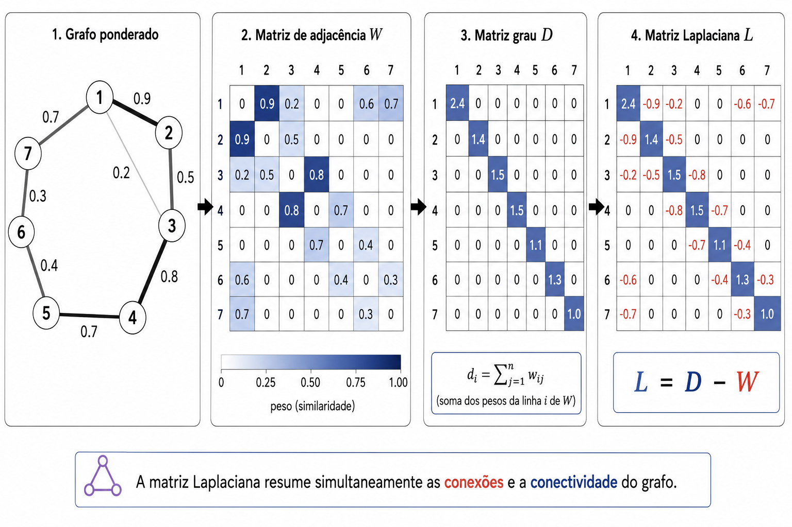
A matriz Laplaciana combina duas informações fundamentais do grafo:
Seu papel é medir quanto uma função definida sobre os nós varia ao longo das conexões do grafo.
Quando dois nós fortemente conectados recebem valores muito diferentes, a matriz Laplaciana penaliza essa diferença.
Assim, o Agrupamento Espectral procura encontrar representações nas quais:
Importante
A matriz Laplaciana preserva a estrutura de conectividade do grafo e revela suas comunidades por meio de seus autovetores.
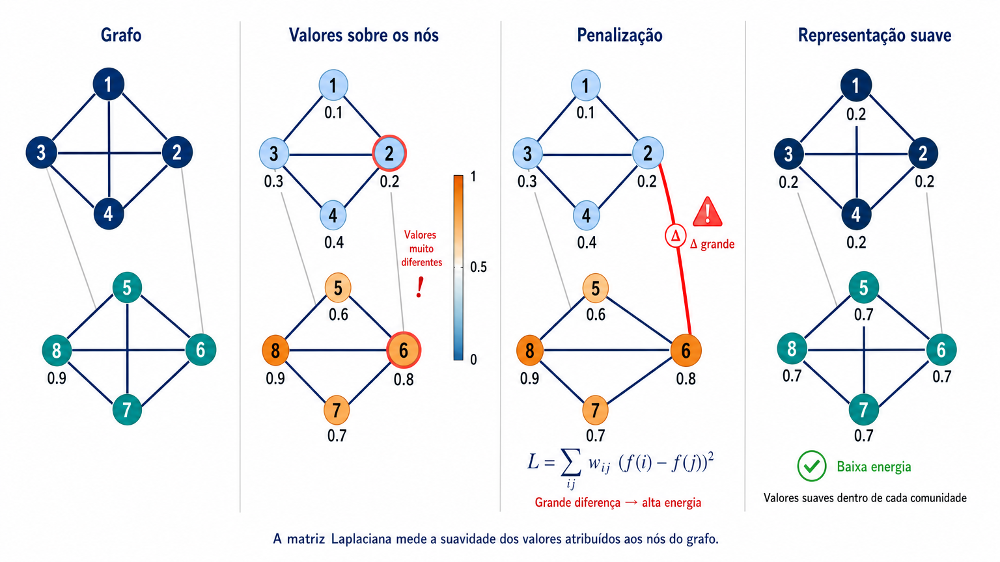
Considere um grafo ponderado com matriz de adjacência \(\mathbf{W}\) e matriz grau \(\mathbf{D}\).
A matriz Laplaciana é definida por
\[ \boxed{ \mathbf{L} = \mathbf{D}-\mathbf{W} } \]
Uma propriedade fundamental é sua forma quadrática:
\[ \boxed{ \mathbf{x}^{\top}\mathbf{L}\mathbf{x} = \frac12 \sum_{i=1}^{n} \sum_{j=1}^{n} w_{ij}(x_i-x_j)^2 } \]
onde \(\mathbf{x}=(x_1,\ldots,x_n)^\top\) representa um valor associado a cada nó do grafo.
Importante
A matriz Laplaciana mede a “energia” da representação do grafo. Quanto menor essa energia, mais coerente é a representação com a estrutura de conectividade.
O problema de minimizar a energia do grafo pode ser formulado como
\[ \min_{\mathbf{x}} \mathbf{x}^{\top}\mathbf{L}\mathbf{x}, \]
sujeito às restrições
\[ \mathbf{x}^{\top}\mathbf{x}=1, \qquad \mathbf{x}^{\top}\mathbf{1}=0. \]
A solução desse problema é obtida resolvendo
\[ \boxed{ \mathbf{L}\mathbf{v} = \lambda\mathbf{v} } \]
onde
Os autovetores associados aos menores autovalores não nulos fornecem uma nova representação dos dados, preservando a estrutura de conectividade do grafo.
Importante
No Agrupamento Espectral, os autovetores da Laplaciana desempenham um papel semelhante ao das componentes principais no PCA: eles definem um novo espaço onde os grupos tornam-se mais facilmente separáveis.
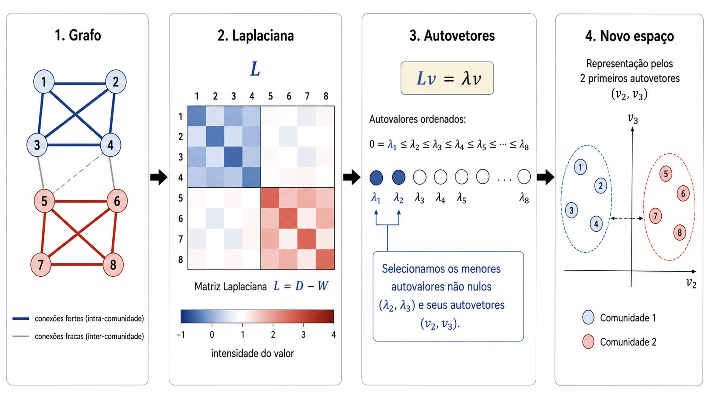
O Agrupamento Espectral transforma os dados para um novo espaço definido pelos autovetores da matriz Laplaciana e, nesse novo espaço, aplica um algoritmo tradicional de agrupamento.
\[ \mathbf{L}=\mathbf{D}-\mathbf{W}; \]
O Agrupamento Espectral transforma os dados para um novo espaço definido pelos autovetores da matriz Laplaciana e, nesse novo espaço, aplica um algoritmo tradicional de agrupamento.
Importante
O Agrupamento Espectral não substitui o K-médias. Ele transforma os dados em um espaço onde o K-médias consegue identificar corretamente grupos que originalmente não eram separáveis.
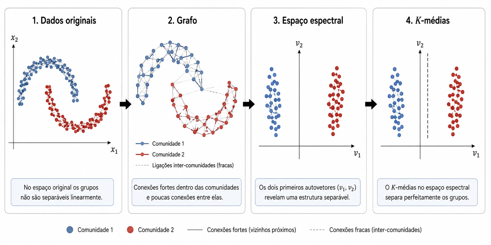
Os autovetores da matriz Laplaciana definem um novo sistema de coordenadas para as observações.
Nesse novo espaço:
Assim, um algoritmo simples como o K-médias passa a identificar corretamente os agrupamentos.
O Agrupamento Espectral não altera os grupos existentes nos dados; ele altera a forma de representá-los.
library(ggplot2)
library(dplyr)
library(patchwork)
library(cowplot)
set.seed(335)
#--------------------------------------------------
# 1. Gerar a base Two Moons
#--------------------------------------------------
n <- 400
n_meia <- n / 2
theta1 <- runif(n_meia, 0, pi)
theta2 <- runif(n_meia, 0, pi)
dados <- bind_rows(
data.frame(
x1 = cos(theta1) +
rnorm(n_meia, mean = 0, sd = 0.06),
x2 = sin(theta1) +
rnorm(n_meia, mean = 0, sd = 0.06),
estrutura = "Lua 1"
),
data.frame(
x1 = 1 - cos(theta2) +
rnorm(n_meia, mean = 0, sd = 0.06),
x2 = -sin(theta2) + 0.45 +
rnorm(n_meia, mean = 0, sd = 0.06),
estrutura = "Lua 2"
)
)
X <- scale(
as.matrix(
dados[, c("x1", "x2")]
)
)
#--------------------------------------------------
# 2. K-médias no espaço original
#--------------------------------------------------
ajuste_kmeans <- kmeans(
X,
centers = 2,
nstart = 50
)
dados$grupo_kmeans <- factor(
ajuste_kmeans$cluster
)
#--------------------------------------------------
# 3. Construir a matriz de similaridade W
#--------------------------------------------------
distancias2 <- as.matrix(
dist(X)
)^2
sigma <- 0.35
W_completa <- exp(
-distancias2 / (2 * sigma^2)
)
diag(W_completa) <- 0
# Manter apenas os k vizinhos mais próximos
k_vizinhos <- 10
W_knn <- matrix(
0,
nrow = nrow(W_completa),
ncol = ncol(W_completa)
)
for (i in seq_len(nrow(W_completa))) {
vizinhos <- order(
W_completa[i, ],
decreasing = TRUE
)[seq_len(k_vizinhos)]
W_knn[i, vizinhos] <-
W_completa[i, vizinhos]
}
# Tornar o grafo não direcionado
W <- pmax(
W_knn,
t(W_knn)
)
#--------------------------------------------------
# 4. Matriz grau e Laplaciana normalizada
#--------------------------------------------------
graus <- rowSums(W)
D_inv_sqrt <- diag(
1 / sqrt(
pmax(graus, 1e-12)
)
)
L_norm <- diag(nrow(W)) -
D_inv_sqrt %*%
W %*%
D_inv_sqrt
# Garantir simetria numérica
L_norm <- (
L_norm + t(L_norm)
) / 2
#--------------------------------------------------
# 5. Autovalores e autovetores
#--------------------------------------------------
decomp <- eigen(
L_norm,
symmetric = TRUE
)
ordem <- order(
decomp$values
)
autovalores <- decomp$values[ordem]
autovetores <- decomp$vectors[, ordem]
# Para K = 2, utilizar os dois menores autovetores
# e normalizar as linhas, conforme a formulação
# da Laplaciana simétrica normalizada.
Z <- autovetores[, 1:2, drop = FALSE]
normas <- sqrt(
rowSums(Z^2)
)
Z <- Z / pmax(
normas,
1e-12
)
#--------------------------------------------------
# 6. K-médias no espaço espectral
#--------------------------------------------------
ajuste_espectral <- kmeans(
Z,
centers = 2,
nstart = 50
)
dados$grupo_espectral <- factor(
ajuste_espectral$cluster
)
espaco_espectral <- data.frame(
v1 = Z[, 1],
v2 = Z[, 2],
grupo = dados$grupo_espectral,
estrutura = dados$estrutura
)
#--------------------------------------------------
# 7. Tema comum
#--------------------------------------------------
tema_comum <- theme_minimal(
base_size = 15
) +
theme(
plot.title = element_text(
face = "bold",
hjust = 0.5
),
plot.subtitle = element_text(
hjust = 0.5
),
panel.grid.minor = element_blank()
)
#--------------------------------------------------
# 8. Paleta comum
#--------------------------------------------------
cores_grupos <- c(
"1" = "#F8766D",
"2" = "#00BFC4"
)
#--------------------------------------------------
# 9. Gráficos
#--------------------------------------------------
g_original <- ggplot(
dados,
aes(x1, x2)
) +
geom_point(
color = "gray55",
size = 2,
alpha = 0.8
) +
coord_equal() +
labs(
title = "Dados originais",
subtitle = "Estrutura não convexa",
x = expression(X[1]),
y = expression(X[2])
) +
tema_comum +
theme(
legend.position = "none"
)
g_kmeans <- ggplot(
dados,
aes(
x1,
x2,
color = grupo_kmeans
)
) +
geom_point(
size = 2,
alpha = 0.8
) +
coord_equal() +
scale_color_manual(
values = cores_grupos,
breaks = c("1", "2"),
labels = c("Grupo 1", "Grupo 2"),
drop = FALSE
) +
labs(
title = "K-médias",
subtitle = "Aplicado ao espaço original",
x = expression(X[1]),
y = expression(X[2]),
color = "Grupo"
) +
tema_comum
g_espectral <- ggplot(
dados,
aes(
x1,
x2,
color = grupo_espectral
)
) +
geom_point(
size = 2,
alpha = 0.8
) +
coord_equal() +
scale_color_manual(
values = cores_grupos,
breaks = c("1", "2"),
labels = c("Grupo 1", "Grupo 2"),
drop = FALSE
) +
labs(
title = "Agrupamento Espectral",
subtitle = "A conectividade das luas é preservada",
x = expression(X[1]),
y = expression(X[2]),
color = "Grupo"
) +
tema_comum
#--------------------------------------------------
# 10. Extrair uma legenda horizontal
#--------------------------------------------------
legenda_inferior <- cowplot::get_legend(
g_espectral +
guides(
color = guide_legend(
title.position = "left",
title.hjust = 0.5,
nrow = 1,
byrow = TRUE
)
) +
theme(
legend.position = "bottom",
legend.direction = "horizontal",
legend.box = "horizontal",
legend.justification = "center",
legend.title = element_text(
face = "bold"
),
legend.margin = margin(
t = 0,
r = 0,
b = 0,
l = 0
)
)
)
#--------------------------------------------------
# 11. Remover legendas dos painéis
#--------------------------------------------------
g_kmeans_sem_legenda <- g_kmeans +
theme(
legend.position = "none"
)
g_espectral_sem_legenda <- g_espectral +
theme(
legend.position = "none"
)
#--------------------------------------------------
# 12. Linha com os três gráficos
#--------------------------------------------------
linha_graficos <- cowplot::plot_grid(
g_original,
g_kmeans_sem_legenda,
g_espectral_sem_legenda,
nrow = 1,
align = "hv",
axis = "tblr",
rel_widths = c(1, 1, 1)
)
#--------------------------------------------------
# 13. Cabeçalho
#--------------------------------------------------
cabecalho <- cowplot::ggdraw() +
cowplot::draw_label(
"K-médias × Agrupamento Espectral",
x = 0.5,
y = 0.72,
hjust = 0.5,
fontface = "bold",
size = 21
) +
cowplot::draw_label(
paste0(
"Kernel RBF com σ = ",
sigma,
" e grafo com ",
k_vizinhos,
" vizinhos"
),
x = 0.5,
y = 0.22,
hjust = 0.5,
size = 13
)
#--------------------------------------------------
# 14. Figura final
#--------------------------------------------------
figura_comparacao <- cowplot::plot_grid(
cabecalho,
linha_graficos,
legenda_inferior,
ncol = 1,
rel_heights = c(
0.16,
1,
0.10
)
)
figura_comparacao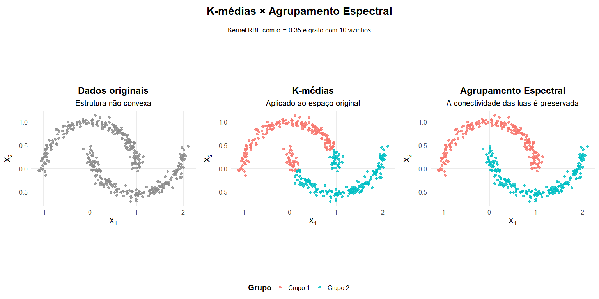